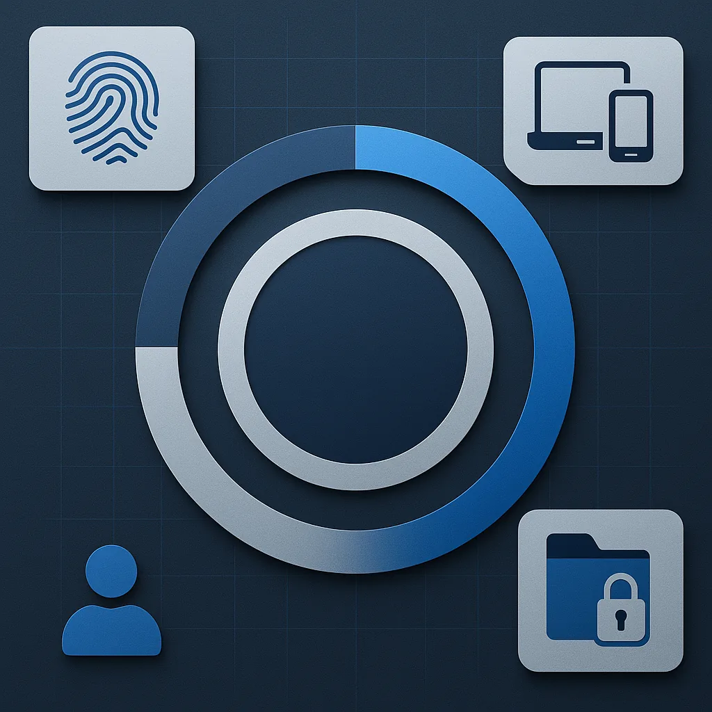
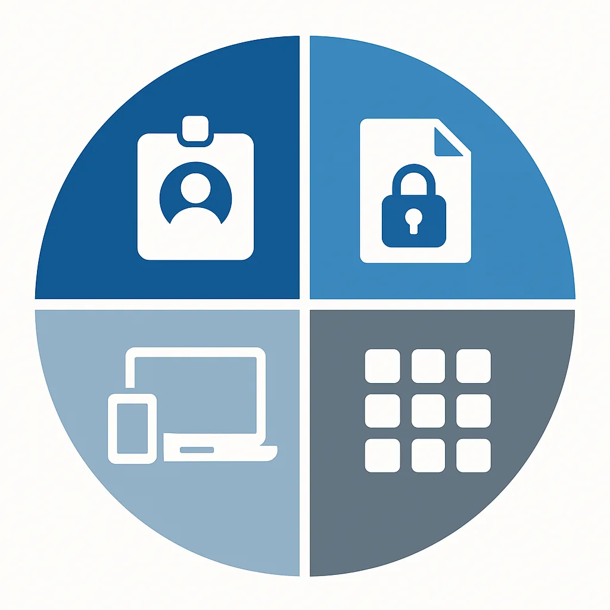

Microsoft Secure Score gives every SMB a concrete, measurable view of its Microsoft 365 security posture. Instead of guessing whether your tenant is well-configured, Secure Score assigns a percentage based on the controls you have enabled — covering identity, devices, data, and applications. For small and medium-sized businesses that lack a dedicated security operations center, it is the fastest way to identify the gaps attackers are most likely to exploit and to prioritize the fixes that matter most.
The Reality for SMBs: Why Secure Score Matters
Small and medium-sized businesses are the attack surface nobody staffs. In the tenants I review, the pattern repeats: credentials are the way in, and the account that gets taken over is almost always one without MFA. Not because the company decided against it, but because nobody had a list of what was missing. That list is exactly what Secure Score gives you.
What is Microsoft Secure Score?

Microsoft Secure Score measures how far you have gone in adopting the security controls Microsoft 365 offers you. It assesses your organization's security settings, user behaviors, and compliance with best practices across identity, devices, data, and apps. The result is a point total — each recommended action is worth up to 10 points — which the Defender portal also shows as a percentage of the points available to you. Secure Score updates in real time, reflecting changes as you implement (or miss) recommended actions.
One thing it is not, in Microsoft's own words: "an absolute measurement of how likely your system or data could be breached. Rather, it represents the extent to which you are using security controls … that can help offset the risk of being breached." Read it as coverage of controls, not as a probability of getting hit. A high score with the wrong controls covered is still a bad tenant.
How Secure Score Works: Key Features
- Security Posture Assessment: Evaluates your Microsoft 365 environment for best-practice configurations (e.g., MFA, alerting, data loss prevention).
- Real-Time Monitoring: Your score updates in real time as you make changes, and Secure Score syncs daily for achieved points. Two categories lag much longer: Microsoft Entra recommendation states refresh weekly, Microsoft Teams recommendation states monthly.
- Actionable Recommendations: Each recommended action is worth 10 points or less, and most are scored in a binary fashion — you get all the points or none. Others are scored as a percentage of the total configuration, so protecting 50 of 100 users with MFA gets you half.
- Benchmarking: Compare your score to industry averages and similar organizations.
What Does Secure Score Evaluate?

| Component | Description |
|---|---|
| Identity | Microsoft Entra accounts and roles — are users protected with MFA, is legacy auth blocked, are admin roles least-privileged? |
| Data | Microsoft Purview Information Protection — is sensitive data labelled, encrypted, and access-controlled? |
| Device | Microsoft Defender for Endpoint, fed by Microsoft Secure Score for Devices — are endpoints compliant, patched, and free of known vulnerabilities? |
| Apps | Email and cloud apps: Office 365, Exchange Online, SharePoint Online, Teams, and Microsoft Defender for Cloud Apps. Patching and vulnerability assessment do not live here — they sit under Device. |
Practical Steps for SMBs
Initial Setup:
- Sign in to the Microsoft Defender portal at https://security.microsoft.com and go to https://security.microsoft.com/securescore
- Check you actually have access: read and write needs Security Administrator or higher (Exchange Administrator and SharePoint Administrator also qualify); Security Reader, Global Reader and Helpdesk Administrator get read-only. Under Microsoft Defender Unified RBAC the equivalent permissions are Exposure Management (read) and Exposure Management (manage) in the Security posture category.
- Review your current score and recommended actions
Quick Wins:
- Turn on security defaults if you have no Conditional Access yet — it awards full points for three recommended actions at once: "Ensure all users can complete multifactor authentication" (9 points), "Require MFA for administrative roles" (10 points), and "Enable policy to block legacy authentication" (7 points). If you already run the equivalent Conditional Access policies, set the sign-in risk and user risk actions to Resolved through alternative mitigation instead of stacking both.
- Enable multi-factor authentication (MFA) for all users
- Restrict external calendar sharing
- Review and limit third-party app integrations
What to Aim For:
- Not a number. Microsoft is explicit about this: "Instead of focusing on a specific score, you should focus on the high importance recommendations that are relevant to your organization. It's more beneficial to have a high score on the high importance recommendations than a high score on low importance recommendations."
- Track two things instead: the trend line over months, and the list of high-importance actions you have actually closed. The built-in comparison with organizations like yours is more useful than any fixed percentage target.
- If a recommendation does not fit your environment, set it to Risk accepted or Resolved through alternative mitigation — that is a documented status, not a workaround.
Ongoing Management:
- Regularly review your Secure Score dashboard
- Implement prioritized recommendations
- Conduct periodic security assessments
- Know what your licences cover. Secure Score shows you the full set of possible recommendations for a product regardless of your licence edition, so recommendations you are not licensed for still pull your percentage down. Your absolute posture does not change with licensing — decide per recommendation whether to buy the licence, mitigate it another way, or mark it as accepted risk.
Taking Action
Improving your Secure Score isn't a one-time task — it's an ongoing process. The recommendations feed directly into a broader Zero Trust strategy, and many of the identity-related actions align with what the Microsoft Entra Suite automates at scale. If you're unsure where to start, professional guidance can help you turn recommendations into results.
Frequently Asked Questions
What is a good Secure Score for an SMB?
Microsoft advises against picking a target number at all: "Instead of focusing on a specific score, you should focus on the high importance recommendations that are relevant to your organization. It's more beneficial to have a high score on the high importance recommendations than a high score on low importance recommendations." So measure the trend and the high-importance actions you have closed, and use the built-in comparison with organizations like yours rather than a fixed percentage. A tenant at 45 % with every high-importance identity action done is in better shape than one at 70 % that padded the number with low-impact items.
Does improving Secure Score require premium licenses?
Many high-impact actions — enabling MFA, blocking legacy authentication, restricting external sharing — are available in every Microsoft 365 plan. Device compliance and endpoint protection are covered by Microsoft 365 Business Premium, which includes Intune Plan 1 and Defender for Business. Risk-based Conditional Access is not. It depends on Microsoft Entra ID Protection, which needs Microsoft Entra ID P2 — available in Microsoft 365 E5, the Microsoft Entra Suite, or the Microsoft Defender Suite for Business Premium add-on. Business Premium includes only Entra ID P1. This is the single most common licensing mistake I see on this topic.
How often does Secure Score update?
Your score updates in real time, and Secure Score syncs daily to pick up achieved points. Two categories lag far longer than a day: Microsoft Entra recommendation states refresh weekly, and Microsoft Teams recommendation states refresh monthly. So give those a week or a month before assuming something did not register.
Secure. Scalable. Effortless with M365 – Delivered by One Who Knows.
Ready to strengthen your cyber defense and boost your Microsoft Secure Score?
Let's talk – I deliver smart solutions, personally.